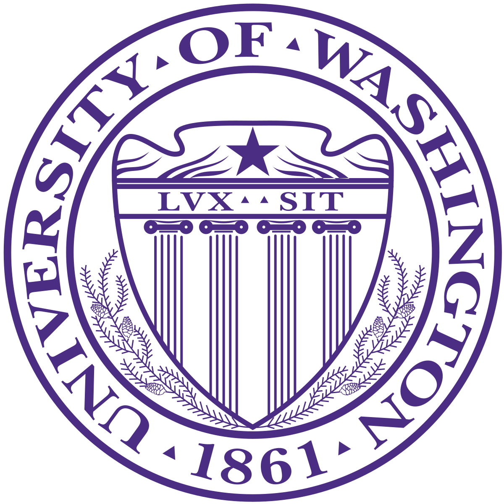
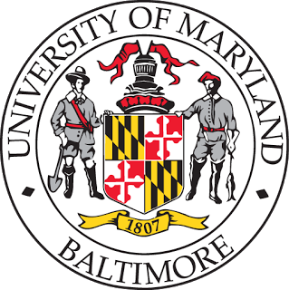
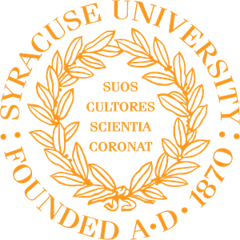
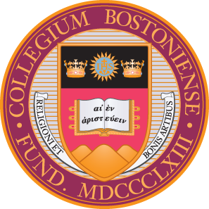
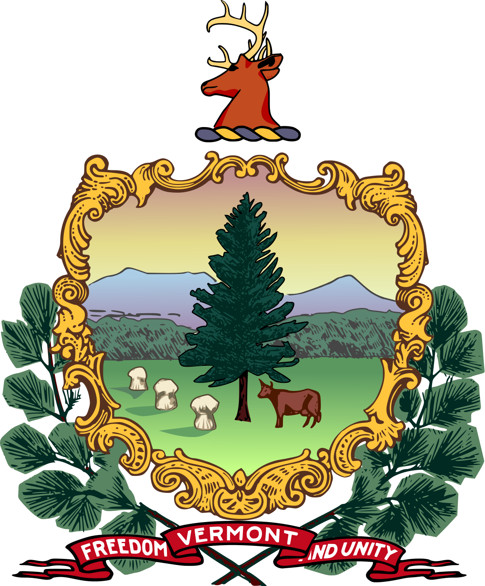
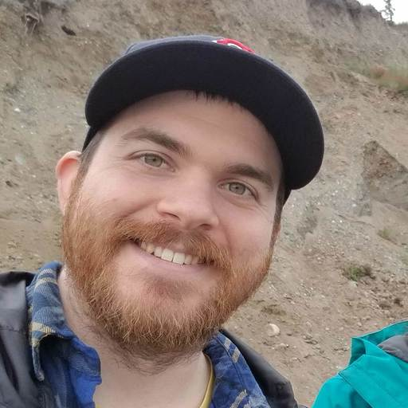

>>Professional
I am currently a Data Management Contractor with the Marketing Operations team at Raptive
Before that I was a Post-Doctoral Scholar in David Perkel's lab at the University of Washington where I studied auditory learning and memory and adult neurogenesis
Before that I received my PhD from the University of Maryland School of Medicine where I studied the neurodevelopmental effects of in utero pesticide exposure; I also studied the pharmacodynamics of a potential antidepressant, (2R,6R)-hydroxynorketamine
Before that I received my MS in Forensic Science from Syracuse University, where I was also a General and Organic Chemistry Tutor
Before that I received my BS in Chemistry with a minor in Music from Boston College, where I was also an RA
>>Personal
I'm interested in many applications of Data Science and AI, from understanding how the brain works to healthcare, from climate change (see my Climate Change AI (CCAI) blog) to sabermetrics
I have volunteered with many organizations, including UMB's NOVA (Neuroscience Outreach and Volunteer Association), UW's Brain Awareness Week and scored grants for CCAI's Innovation Grants program
When I'm not at my computer I'm typically reading, fermenting something, hiking or camping with my amazing partner and energetic hound
>>Contact
You can email me at: eric.w.lumsden@gmail.com